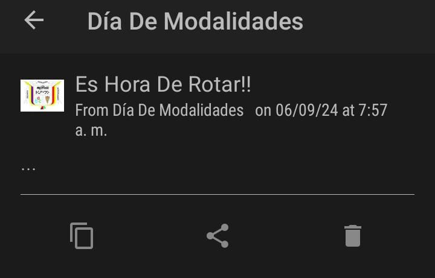

Esta plataforma se creó con el fin de asegurar la asistencia para el día de modalidades y se respeten los horarios de la mejor forma posible brindando notificaciones instantáneas a los estudiantes de las diversas modalidades encargados de la rotación de los estudiantes de los demás cursos.
A continuación una demostración de las notificaciones:
Ofrecemos un sistema de notificaciones instantáneas con el fin de generar una mejor gestión de rotación durante los eventos educativos.